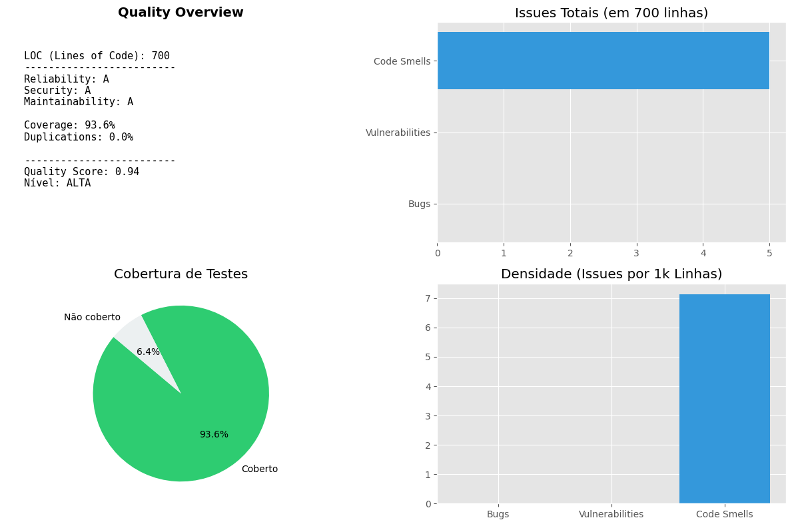
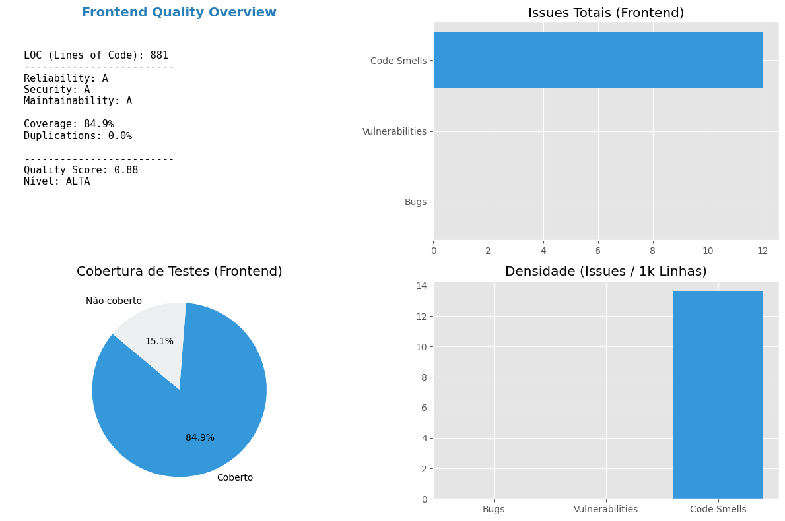
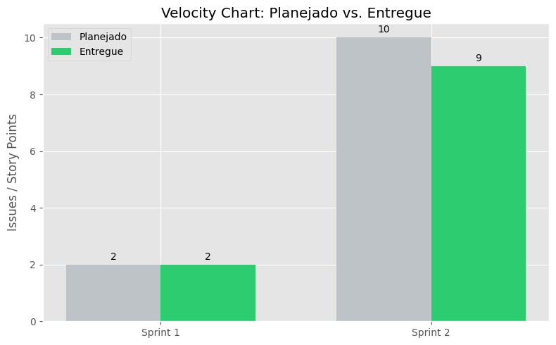
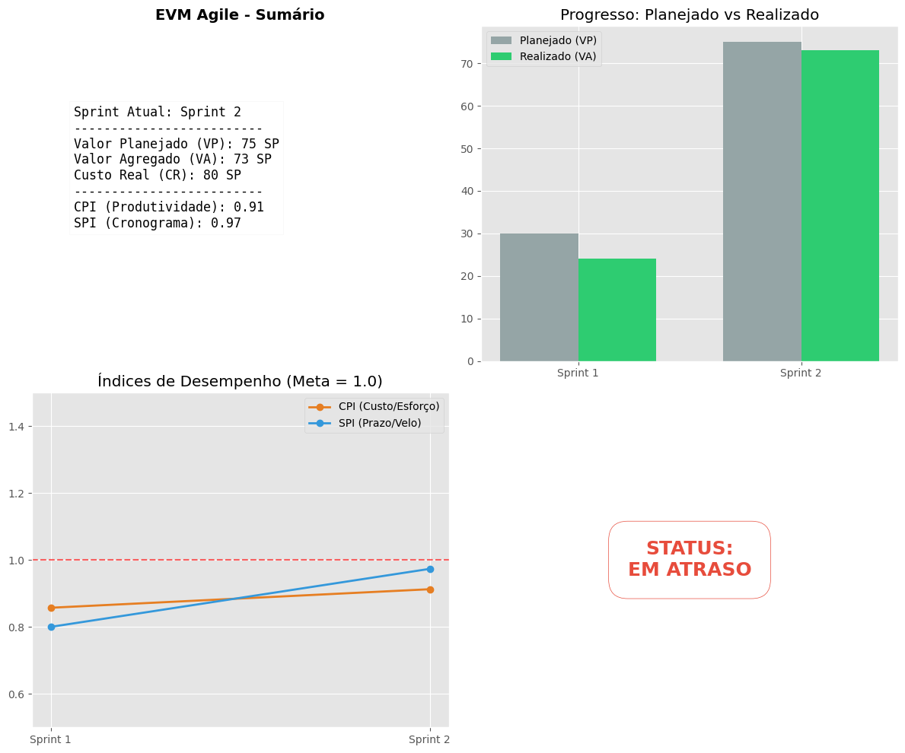
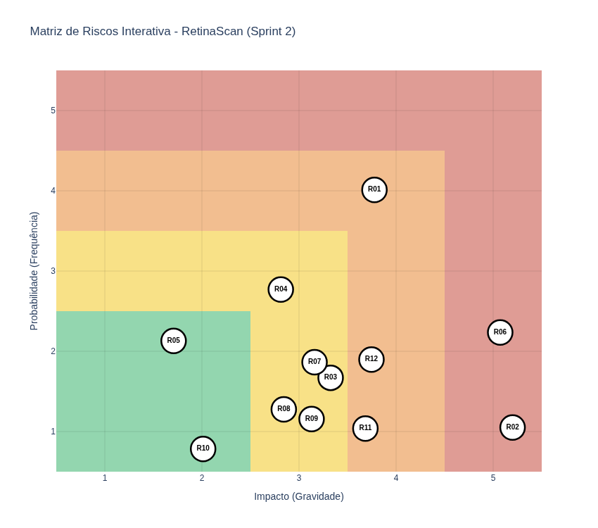

Dashboard Analítico
Métricas de Qualidade - Backend (SonarCloud)
Esta seção apresenta a análise automatizada da saúde técnica do backend, utilizando dados extraídos via API do SonarCloud. O dashboard utiliza conceitos avançados de Engenharia de Software para transformar métricas brutas em indicadores de decisão.
Definição das Métricas
- ncloc (Lines of Code): Quantidade de linhas de código lógico, utilizada como base para o cálculo de densidade.
- Ratings (A-E): Avaliação qualitativa de Reliability (Confiabilidade), Security (Segurança) e Maintainability (Manutenibilidade).
- Issues por Densidade (KLOC): Bugs, Vulnerabilidades e Code Smells calculados a cada 1.000 linhas de código. Isso permite uma comparação justa entre diferentes tamanhos de projeto.
- Coverage: Percentual de linhas protegidas por testes unitários e de integração.
Análise e Interpretação dos Resultados
1. Índice de Qualidade Geral (Quality Score)
Diferente de dashboards comuns, o nosso Quality Score é um indicador composto e normalizado por densidade, seguindo a fórmula:
$$QualityScore = (Cov_{norm} \cdot 0.35) + (Vuln_{norm} \cdot 0.25) + (Bugs_{norm} \cdot 0.20) + (Smells_{norm} \cdot 0.10) + (Dup_{norm} \cdot 0.10)$$
- Nível ALTA (>= 0.8): Alta maturidade técnica. O projeto equilibra segurança, testes e manutenibilidade.
- Nível MÉDIA (0.5 - 0.79): Alerta para o acúmulo de dívida técnica ou queda na cobertura de testes.
- Nível BAIXA (< 0.5): Risco crítico. Necessidade de interrupção para refatoração e correção de vulnerabilidades.
2. Densidade de Issues (KLOC)
O gráfico de Densidade é o nosso principal termômetro de qualidade. Em vez de olhar apenas o número absoluto de bugs, avaliamos se a frequência de erros está aumentando proporcionalmente ao tamanho do código. * Vulnerabilidades: Possuem o maior peso negativo, pois comprometem a integridade do sistema. * Bugs: Indicam falhas na lógica de negócio que devem ser mitigadas com melhores práticas de QA.
3. Qualidade Estrutural e Cobertura
A análise visual de pizza e barras foca no equilíbrio do Pipeline de CI: * Testes: Buscamos manter a cobertura acima de 80% para garantir refatorações seguras. * Duplicação: Monitoramos para manter o código enxuto, respeitando o princípio DRY (Don't Repeat Yourself).
A transição para uma análise baseada em Densidade (KLOC) segue os padrões de mercado para métricas de software (ISO/IEC 25010). Isso garante que o dashboard permaneça útil e preciso à medida que o repositório
RetinaScan-Apicresce, evitando que números absolutos mascarem a real qualidade do produto.

Métricas de Qualidade - Frontend (SonarCloud)
Esta seção detalha a qualidade técnica da interface do RetinaScan-Web. No desenvolvimento frontend, manter a manutenibilidade e a baixa densidade de Code Smells é crucial para garantir uma UI fluida e livre de efeitos colaterais.
Métricas Estratégicas
- Maintainability (Manutenibilidade): Essencial para o frontend, avalia a facilidade de evolução dos componentes e hooks.
- Security & Vulnerabilities: Monitora riscos em dependências e manipulação de dados no lado do cliente.
- Densidade por KLOC: Normaliza a quantidade de problemas pelo tamanho da base de código (Lines of Code), permitindo medir a eficiência do desenvolvimento à medida que a aplicação cresce.
Análise do Quality Score (Front)
O cálculo do score segue o mesmo rigor aplicado ao backend, garantindo que o projeto mantenha uma barra de qualidade única:
$$QualityScore = (Cov_{norm} \cdot 0.35) + (Vuln_{norm} \cdot 0.25) + (Bugs_{norm} \cdot 0.20) + (Smells_{norm} \cdot 0.10) + (Dup_{norm} \cdot 0.10)$$
- Foco em Cobertura: Para o frontend, priorizamos a cobertura de componentes críticos e fluxos de usuário, visando mitigar bugs de interface que afetam diretamente a experiência do usuário.
- Saúde Estrutural: A baixa duplicação de código reflete o uso eficiente de componentes reutilizáveis e o respeito aos padrões de design de software.

Velocity Chart (Produtividade do Time)
O gráfico de Velocity é uma métrica fundamental do framework Scrum, utilizada para medir a taxa de entrega de valor da equipe ao longo das sprints.
O que estamos analisando?
- Planejado (Commitment): A quantidade de trabalho que a equipe se comprometeu a realizar durante a Sprint Planning.
- Entregue (Velocity): O trabalho efetivamente concluído e que atende à "Definição de Pronto" (DoD).
Interpretação
Este gráfico permite observar a maturidade da equipe. Nas primeiras sprints, é comum haver uma grande diferença entre o planejado e o entregue. Com o tempo, a tendência é que a equipe aprenda sua real capacidade, tornando as estimativas mais precisas e a velocidade mais constante.
Nota: Os dados de produtividade são consolidados manualmente a partir do ZenHub, considerando o fechamento de cada ciclo de entrega.

Gestão de Valor Agregado (EVM) Ágil
O EVM (Earned Value Management) é uma metodologia que integra escopo, cronograma e recursos para medir o desempenho e o progresso do projeto. No contexto ágil, adaptamos os conceitos para Story Points (SP).
Componentes do Cálculo
- VP (Valor Planejado): Esforço total planejado para as sprints concluídas até o momento.
- VA (Valor Agregado): Esforço das issues efetivamente entregues (Done).
- CR (Custo Real): Esforço total despendido (equivalente ao total de pontos em execução ou horas).
Indicadores de Performance
Para avaliar a saúde do projeto, utilizamos dois índices principais que orbitam o valor 1.0:
- SPI (Schedule Performance Index): Mede a eficiência do cronograma.
- O projeto está adiantado ou conforme o planejado: $$SPI \ge 1.0$$
- O projeto está entregando menos pontos do que o planejado por ciclo: $$SPI < 1.0$$
- CPI (Cost Performance Index): Mede a eficiência do esforço/custo.
- O time está sendo produtivo com os recursos atuais: $$CPI \ge 1.0$$
- O esforço despendido está sendo maior do que o valor entregue: $$CPI < 1.0$$
Se o SPI se mantiver abaixo de 1.0 consistentemente, o dashboard aciona um alerta visual para que a equipe revise o escopo do MVP ou a capacidade de entrega nas próximas sprints.

Matriz de Risco (Sprint 2)
A matriz de risco apresenta a distribuição dos riscos identificados no projeto com base em sua probabilidade de ocorrência e impacto, permitindo priorizar ações de mitigação.
Cada ponto representa um risco (R01–R12), posicionado conforme seus valores de probabilidade (eixo Y) e impacto (eixo X). As cores indicam o nível de criticidade: - Verde: baixo risco - Amarelo: risco médio - Vermelho: risco elevado
Observa-se que a maioria dos riscos está concentrada nas faixas de baixo e médio impacto, indicando um cenário relativamente controlado. No entanto, riscos com maior criticidade, como aqueles posicionados nas regiões superiores da matriz, exigem atenção prioritária da equipe.
Essa visualização permite: - identificar rapidamente os riscos mais críticos - apoiar decisões de priorização de mitigação - acompanhar a evolução do perfil de risco ao longo das sprints
A matriz deve ser continuamente atualizada a cada sprint, refletindo mudanças no contexto do projeto e a efetividade das ações de mitigação adotadas.
| Risco | Descrição | Categoria |
|---|---|---|
| R01 | Dificuldade com as tecnologias definidas | Técnico |
| R02 | Saída de algum integrante do projeto | Gerencial |
| R03 | Divergência nos horários disponíveis dos integrantes | Organizacional |
| R04 | Alteração no escopo do projeto | Gerencial |
| R05 | Integrante com problema de saúde | Externo |
| R06 | Indisponibilidade do cliente ou de especialistas para esclarecimento de requisitos | Externo |
| R07 | Sobrecarga de membros da equipe | Gerencial |
| R08 | Falha de equipamento | Externo |
| R09 | Dependência entre atividades | Organizacional |
| R10 | Problemas com a infraestrutura de rede | Técnico |
| R11 | Resultados insatisfatórios da solução desenvolvida | Técnico |
| R12 | Falta de dados adequados para desenvolvimento e validação | Externo |
